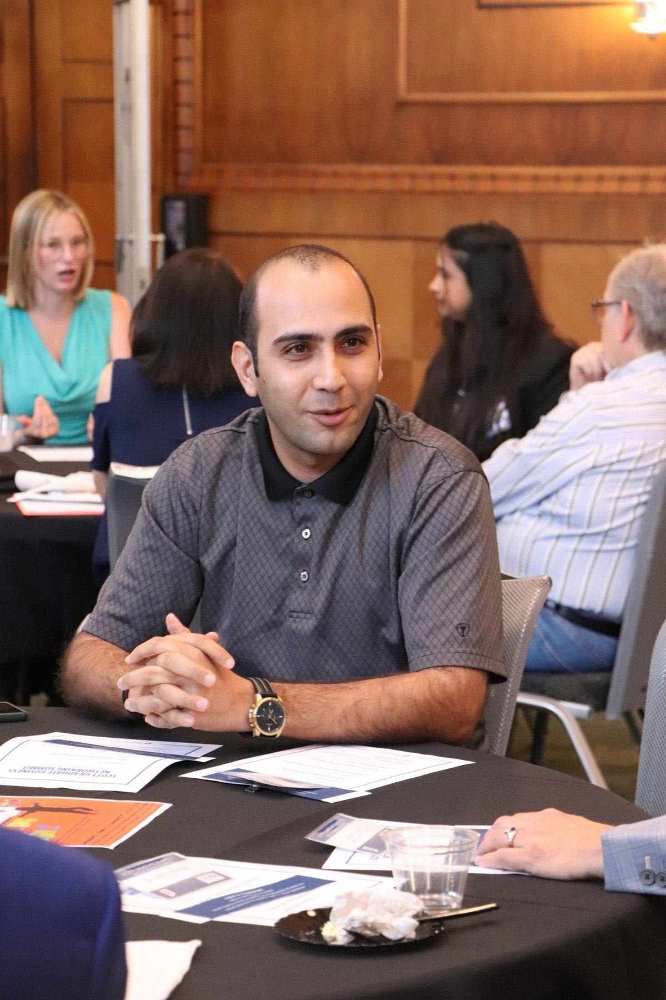

Work & Psychology
Understanding People at Work
Reflections on motivation, resilience, meaningful work, and the experiences that shape employee life.
Higher Education · I-O Psychology · Organizational Behavior
I study how people, organizations, and institutions adapt to change. Bringing together industrial-organizational psychology and higher education leadership, my work explores the human side of leadership, meaningful work, employee development, and emerging technologies.

My work begins with a question: how can workplaces and educational institutions help people do meaningful work, continue learning, and thrive through change?
I am a PhD student in Higher Education Leadership at Indiana State University, with a background in industrial-organizational psychology, organizational behavior, and applied research. My professional journey across psychology, consulting, and research has shaped a practical, people-centered perspective on leadership and development.
I connect psychological theory with real organizational and educational challenges, with particular interest in how leadership, culture, and technology influence people’s experiences and opportunities.
My research interests include:
Public Writing
Ideas for people who are curious about work, leadership, psychology, education, and technology. Here I share research-informed perspectives in clear, accessible language—connecting evidence with the questions people face in everyday professional life.
Work & Psychology
Reflections on motivation, resilience, meaningful work, and the experiences that shape employee life.
Leadership
Ideas about leadership, learning, and building environments where people can grow.
Technology & Education
Questions about AI, higher education, and how institutions can respond thoughtfully to change.